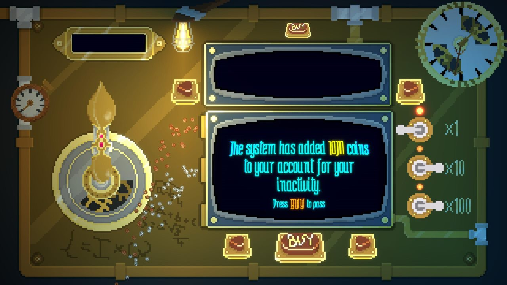

Clicker incremental · Pixel art · PCIncremental clicker · Pixel art · PC
Loop My Crank
Un clicker absurdo en el que, en vez de pulsar, giras manivelas. Mejora tu autoclicker, investiga en el laboratorio y encadena mejoras en un bucle de progresión infinito, con una estética industrial retro en pixel art. An absurd clicker where, instead of clicking, you turn cranks. Upgrade your autoclicker, research in the lab and chain upgrades into an infinite progression loop, in a retro industrial pixel-art style.
- RolRole
- Game design + Dev
- EquipoTeam
- 2 personas2 people
- LanzamientoRelease
- 13 / 11 / 2025
RetoChallenge
- Escalar una idea nacida en una game jamScaling an idea born in a game jam Las ideas de jam suelen ser pequeñas y poco escalables. La escalé creando sistemas que reutilizan la mecánica principal, tan única como girar una manivela, pero que funcionan de forma secundaria dentro del bucle con contenido extra: un autolooper y un laboratorio que mejora cosas del bucle principal. Jam ideas tend to be small and hard to scale. I scaled it by building systems that reuse the core mechanic, as unique as turning a crank, but work in a secondary role inside the loop with extra content: an auto-looper and a lab that upgrades parts of the main loop.
Mi parte en el códigoMy part in the code Desarrollé la generación automática de dinero con sus mejoras, el autolooper y el laboratorio. I developed the automatic money generation and its upgrades, the auto-looper and the lab.